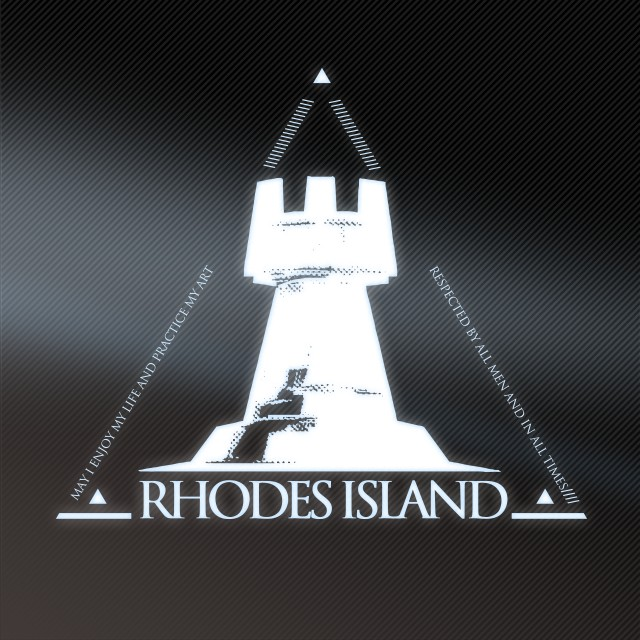
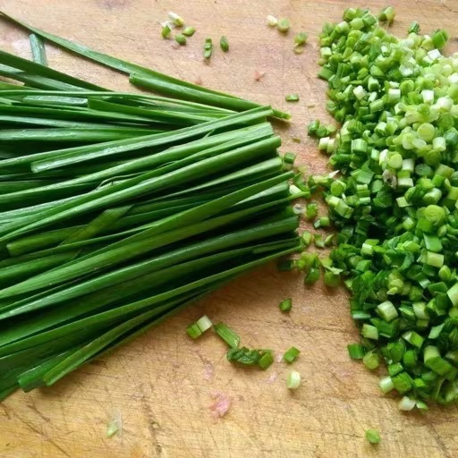

B站直播日报汇总
2026-11-26 · 官方 1/15 开播 · KOL 11/13 开播
12/28
开播间
84h32m
累计时长
135,799
有效弹幕（原始 209,313，剔除 73,514）
📊 当日全场舆情（12 间开播 · 三维打点）
风险等级：低（1.0%） 判定 v3.2-m5.0
有效弹幕 135,799（剔噪声 0） ｜
正向率 13.7% ｜ 负向率 17.6% ｜
判定来源：consensus 131196（97%）多源 4603（3%）
① 话题分布
游戏 24073（18%） ｜ 泛讨论 111726（82%）
正面中性负面
游戏话题game18%
正 5106·中 11904·负 706324,073 条
泛讨论话题meta82%
正 13490·中 81420·负 16816111,726 条
游戏话题 · 明细
角色25%5,916
商业化17%4,179
玩法16%3,948
竞品对比14%3,448
剧情9%2,253
版本节奏8%1,922
技术5%1,267
音乐音效5%1,140
展开其余 5 个话题收起▾
泛讨论话题 · 明细
泛讨论96%107,422
社区生态2%1,639
主播KOL1%1,429
厂商动态1%1,236
展开其余 1 个话题收起▾
② 情感分布
正面为主 1（0%）偏正面 18595（14%）中性 93324（69%）偏负面 23461（17%）负面为主 418（0%）
③ 风险标签
高 792 ｜ 中 507 ｜ 低 12 ｜ 无 134488
泄露/开盒 705社区互撕/引战 291产品事故 141性别对立 96涉政敏感 91阶级/地域对立 12
代表性评论
- [泛讨论]“棉花这么晚才开播”
- [角色]“不辣只瑟的游戏来了”
- [商业化]“强颜欢笑”
- [玩法]“这游戏玩下来好玩吗”
- [竞品对比]“二游皇帝舍得开播了”
⚠️ 风险弹幕样本（共 1299 条，展示前 6）
- · [泄露/开盒] 已修改后台数据[汤圆]
- · [泄露/开盒] 解包就是更少了
- · [社区互撕/引战] 冲了10个648
- · [社区互撕/引战] 这个指引战斗也太长了
- · [产品事故] 投诉，问卷调查[吃瓜][吃瓜][吃瓜]
- · [产品事故] 投诉官方，问卷调查，改[滑稽][滑稽][滑稽]
口径：三维正交打点（话题/情感/风险互不耦合）。有效弹幕 = 剔除抽奖刷屏/纯社交噪声后的弹幕。
风险率 = risk_level∈(中,高) 弹幕数 ÷ 有效弹幕数。分歧/反讽/风险候选 4603 条；真实LLM覆盖 0 条，规则兜底复核 1393 条。
游戏直播热度看板
快照时间：2026-11-26（历史补跑） ｜ 全天开播量=24h去重累计 ｜ 官方关注数/Top3/头部主播=今日实时 ｜ 开播趋势=开播量日环比 ｜ 数据来源：B站直播分区API
今日争议 TOP3（按游戏 / 按直播间）
口径：按话题（topic）聚合争议，看情感分歧与风险条数；兜底话题「综合讨论」不单独成争议。
按游戏聚合
TOP1
鸣潮 · 泛讨论
围绕【泛讨论】出现明显分歧（6608条，正1727/负1039，含 33 条风险弹幕）。
46330
TOP2
原神 · 泛讨论
围绕【泛讨论】出现明显分歧（16292条，正1580/负2247，含 51 条风险弹幕）。
45765
TOP3
明日方舟 · 泛讨论
围绕【泛讨论】出现明显分歧（12375条，正1211/负1485，含 2 条风险弹幕）。
12375
按直播间聚合
TOP1
黑衣侦探 · 泛讨论
围绕【泛讨论】出现明显分歧（16056条，正1757/负2838，含 40 条风险弹幕）。
16056
TOP2
棉花大哥哥 · 泛讨论
围绕【泛讨论】出现明显分歧（16292条，正1580/负2247，含 51 条风险弹幕）。
16292
TOP3
企鹅带带北极熊 · 泛讨论
围绕【泛讨论】出现明显分歧（14168条，正1515/负1578，含 30 条风险弹幕）。
14168
官方直播间
开播 1/15 ｜ 弹幕 1,683 条 ｜ 时长 1h49m
网易第五人格手游（5887574）👥 4,881,912 关注
📡 开播 🔥 一般 58 🛡️ 风险 低（0.1%）🎮 主内容：重温经典佳作 ，联动正式开启！
🏷️ Top话题：直播互动
💬 弹幕信号：
偏正面 915%中性 127075%偏负面 32219%
📊 舆情三维（话题 / 情感 / 风险）
有效 1683
🟢低 0.1%
话题分布
正面中性负面
游戏话题game10%
正 20·中 116·负 25161 条
泛讨论话题meta90%
正 71·中 1154·负 2971,522 条
游戏话题 · 明细
玩法27%43
竞品对比27%43
版本节奏18%29
剧情14%22
音乐音效7%11
角色6%10
技术2%3
展开其余 4 个话题收起▾
泛讨论话题 · 明细
泛讨论94%1,429
主播KOL4%68
厂商动态2%25
代表性评论
- [泛讨论] “这播啥呢”
- [主播KOL] “我还以为在直播蓝色星原”
- [玩法] “是刀子[出窍]”
争议焦点：TOP1 泛讨论 1429TOP2 主播KOL 68TOP3 玩法 43
围绕【泛讨论】出现明显分歧（1429条，正70/负280，含 1 条风险弹幕）。
原神（21987615）
👥 20,972,060 关注未开播
崩坏：星穹铁道（27263119）
👥 12,561,823 关注未开播
绝区零（32805602）
👥 8,156,493 关注未开播

明日方舟（5555734）
👥 7,658,216 关注未开播
鸣潮（27354807）
👥 5,411,099 关注未开播
明日方舟终末地（1921300321）
👥 4,925,888 关注未开播
异环（1890951177）
👥 3,036,702 关注未开播
暗区突围（24807588）
👥 2,674,327 关注未开播
待核房间_26284671（26284671）
👥 1,188,658 关注未开播
望月（1892451545）
👥 739,121 关注未开播
遗忘之海（1974514268）
👥 572,000 关注未开播
伊莫（1746235011）
👥 432,865 关注未开播
归环（1992270167）
👥 301,170 关注未开播
待核房间_1942243734（1942243734）
👥 51,835 关注未开播
KOL 直播间
开播 11/13 ｜ 弹幕 134,116 条 ｜ 时长 82h43m
你的影月月（21414905）👥 10,725,424 关注
📡 开播 🔥 热门 75 🛡️ 风险 低（0.2%）🏷️ KOL标签：商单频率：中 ｜ 方向：原神 / 星铁 / 绝区零 / 攻略评测
🎮 主内容：角色
🏷️ Top话题：角色(117) / 剧情(70) / 抽卡(55)
💬 弹幕信号：
偏正面 123813%中性 630068%偏负面 177119%负面为主 50%
📊 舆情三维（话题 / 情感 / 风险）
有效 9314
🟢低 0.2%
话题分布
正面中性负面
游戏话题game25%
正 590·中 1215·负 5512,356 条
泛讨论话题meta75%
正 648·中 5085·负 12256,958 条
游戏话题 · 明细
玩法30%700
角色26%600
商业化21%495
技术8%193
版本节奏7%157
剧情4%94
音乐音效3%71
竞品对比2%46
展开其余 5 个话题收起▾
泛讨论话题 · 明细
泛讨论98%6,843
主播KOL1%94
厂商动态0%12
社区生态0%9
展开其余 1 个话题收起▾
代表性评论
- [泛讨论] “人生而自由，却无往不在枷锁中。”
- [玩法] “有休息好吗 你肝攻略不开播我晚上婴儿般睡眠（。）”
- [角色] “和谐多么[dog]”
争议焦点：TOP1 泛讨论 6843TOP2 玩法 700TOP3 角色 600
围绕【泛讨论】出现明显分歧（6843条，正636/负1204，含 5 条风险弹幕）。
魔法Zc目录（3044248）👥 3,477,069 关注
📡 开播 🔥 火爆 86 🛡️ 风险 低（0.1%）🏷️ KOL标签：商单频率：中 ｜ 方向：明日方舟 / 终末地 / 星铁 / 直播反应
🎮 主内容：终末地
🏷️ Top话题：终末地(14) / 支线(4) / 战斗(3)
💬 弹幕信号：
偏正面 154111%中性 1046276%偏负面 173313%负面为主 90%
📊 舆情三维（话题 / 情感 / 风险）
有效 13745
🟢低 0.1%
话题分布
正面中性负面
游戏话题game9%
正 311·中 686·负 2311,228 条
泛讨论话题meta91%
正 1230·中 9776·负 151112,517 条
游戏话题 · 明细
角色31%379
玩法30%369
商业化10%127
音乐音效9%107
竞品对比8%99
剧情5%58
版本节奏4%49
技术3%40
展开其余 5 个话题收起▾
泛讨论话题 · 明细
泛讨论99%12,375
主播KOL1%69
厂商动态0%63
社区生态0%10
展开其余 1 个话题收起▾
代表性评论
- [泛讨论] “嗨到不行”
- [角色] “v周50来了（”
- [玩法] “今晚联机吗”
争议焦点：TOP1 泛讨论 12375TOP2 玩法 369TOP3 角色 379
围绕【泛讨论】出现明显分歧（12375条，正1211/负1485，含 2 条风险弹幕）。
卡特亚（1455691）👥 3,456,749 关注
📡 开播 🔥 热门 76 🛡️ 风险 低（0.1%）🏷️ KOL标签：商单频率：中 ｜ 方向：原神 / 星铁 / 绝区零 / 鸣潮 / 直播反应
🎮 主内容：剧情
🏷️ Top话题：剧情(94) / 角色(75) / 抽卡(55)
💬 弹幕信号：
偏正面 88514%中性 479073%偏负面 86713%负面为主 20%
📊 舆情三维（话题 / 情感 / 风险）
有效 6544
🟢低 0.1%
话题分布
正面中性负面
游戏话题game23%
正 351·中 852·负 3301,533 条
泛讨论话题meta77%
正 534·中 3938·负 5395,011 条
游戏话题 · 明细
商业化28%436
角色24%360
玩法17%264
剧情11%163
技术9%137
版本节奏6%100
竞品对比3%48
音乐音效2%25
展开其余 5 个话题收起▾
泛讨论话题 · 明细
泛讨论96%4,815
主播KOL3%145
厂商动态1%34
社区生态0%17
展开其余 1 个话题收起▾
代表性评论
- [泛讨论] “该玩蓝色星原了[花]”
- [商业化] “那个涂山小月是送的还是抽的？”
- [角色] “治愈的画风”
争议焦点：TOP1 泛讨论 4815TOP2 商业化 436TOP3 角色 360
围绕【泛讨论】出现明显分歧（4815条，正501/负517）。
企鹅带带北极熊（23121424）👥 3,284,639 关注
📡 开播 🔥 火爆 81 🛡️ 风险 低（0.2%）🏷️ KOL标签：商单频率：中 ｜ 方向：原神 / 星铁 / 绝区零 / 付费内容 / 抽卡
🎮 主内容：终末地
🏷️ Top话题：剧情(88) / 抽卡(60) / 配音(18)
💬 弹幕信号：
偏正面 189711%中性 1243875%偏负面 234414%负面为主 130%
📊 舆情三维（话题 / 情感 / 风险）
有效 16692
🟢低 0.2%
话题分布
正面中性负面
游戏话题game14%
正 364·中 1232·负 7412,337 条
泛讨论话题meta86%
正 1533·中 11206·负 161614,355 条
游戏话题 · 明细
角色31%733
玩法31%727
商业化16%366
剧情8%194
版本节奏6%136
技术3%71
音乐音效2%58
竞品对比2%52
展开其余 5 个话题收起▾
泛讨论话题 · 明细
泛讨论99%14,168
主播KOL1%136
厂商动态0%43
社区生态0%8
展开其余 1 个话题收起▾
代表性评论
- [泛讨论] “好早[花]”
- [角色] “ok来了”
- [玩法] “还有弹刀”
争议焦点：TOP1 泛讨论 14168TOP2 玩法 727TOP3 角色 733
围绕【泛讨论】出现明显分歧（14168条，正1515/负1578，含 30 条风险弹幕）。

棉花大哥哥（103）👥 2,723,299 关注
📡 开播 🔥 火爆 86 🛡️ 风险 低（0.4%）🏷️ KOL标签：商单频率：高 ｜ 方向：泛二游直播 / 米哈游系 / 鸣潮 / 终末地 / 社区节奏
🎮 主内容：角色
🏷️ Top话题：角色(183) / 抽卡(172) / 剧情(162)
💬 弹幕信号：
偏正面 251112%中性 1502471%偏负面 359317%负面为主 150%
📊 舆情三维（话题 / 情感 / 风险）
有效 21143
🟢低 0.4%
话题分布
正面中性负面
游戏话题game20%
正 875·中 2199·负 12614,335 条
泛讨论话题meta80%
正 1636·中 12825·负 234716,808 条
游戏话题 · 明细
角色28%1,193
商业化24%1,058
玩法15%653
竞品对比10%415
剧情8%366
技术7%319
版本节奏5%233
音乐音效2%98
展开其余 5 个话题收起▾
泛讨论话题 · 明细
泛讨论97%16,292
主播KOL2%380
社区生态0%80
厂商动态0%56
展开其余 1 个话题收起▾
代表性评论
- [泛讨论] “棉花这么晚才开播”
- [角色] “不辣只瑟的游戏来了”
- [商业化] “强颜欢笑”
争议焦点：TOP1 泛讨论 16292TOP2 角色 1193TOP3 商业化 1058
围绕【泛讨论】出现明显分歧（16292条，正1580/负2247，含 51 条风险弹幕）。
嘉然今天吃什么（22637261）👥 1,874,383 关注
📡 开播 🔥 火爆 85 🛡️ 风险 低（0.0%）🎮 主内容：战斗
🏷️ Top话题：战斗(14)
💬 弹幕信号：
偏正面 174513%中性 960872%偏负面 194915%负面为主 100%
📊 舆情三维（话题 / 情感 / 风险）
有效 13312
🟢低 0.0%
话题分布
正面中性负面
游戏话题game6%
正 180·中 507·负 136823 条
泛讨论话题meta94%
正 1565·中 9101·负 182312,489 条
游戏话题 · 明细
角色36%299
音乐音效18%151
剧情15%124
玩法15%123
商业化12%95
技术2%14
竞品对比2%12
版本节奏1%5
展开其余 5 个话题收起▾
泛讨论话题 · 明细
泛讨论99%12,411
主播KOL0%65
社区生态0%7
厂商动态0%6
展开其余 1 个话题收起▾
代表性评论
- [泛讨论] “想你了小然”
- [角色] “来了来了”
- [音乐音效] “爽这才是音乐”
争议焦点：TOP1 泛讨论 12411TOP2 角色 299TOP3 玩法 123
围绕【泛讨论】出现明显分歧（12411条，正1559/负1812）。
神奇陆夫人（115）👥 1,751,085 关注
📡 开播 🔥 热门 78 🛡️ 风险 低（0.4%）🎮 主内容：剧情
🏷️ Top话题：剧情(44) / 角色(31) / 战斗(15)
💬 弹幕信号：
偏正面 79318%中性 287965%偏负面 73717%负面为主 20%
📊 舆情三维（话题 / 情感 / 风险）
有效 4411
🟢低 0.4%
话题分布
正面中性负面
游戏话题game16%
正 220·中 321·负 147688 条
泛讨论话题meta84%
正 573·中 2558·负 5923,723 条
游戏话题 · 明细
角色25%175
商业化20%138
剧情20%135
玩法15%106
版本节奏11%74
音乐音效4%31
竞品对比4%25
技术1%4
展开其余 5 个话题收起▾
泛讨论话题 · 明细
泛讨论98%3,647
主播KOL1%47
厂商动态1%21
社区生态0%8
展开其余 1 个话题收起▾
代表性评论
- [泛讨论] “来啦来啦！阿妈下午好！”
- [角色] “来了来了”
- [商业化] “感谢良辰和星_Official大佬赠送的60秒醒目留言 x1~”
争议焦点：TOP1 泛讨论 3647TOP2 角色 175TOP3 商业化 138
围绕【泛讨论】出现明显分歧（3647条，正562/负580，含 11 条风险弹幕）。
OldBa1（529）👥 1,730,947 关注
📡 开播 🔥 热门 65 🛡️ 风险 低（0.2%）🎮 主内容：角色
🏷️ Top话题：角色(30) / 剧情(16) / 抽卡(15)
💬 弹幕信号：
偏正面 38619%中性 131265%偏负面 31416%负面为主 10%
📊 舆情三维（话题 / 情感 / 风险）
有效 2013
🟢低 0.2%
话题分布
正面中性负面
游戏话题game22%
正 179·中 175·负 94448 条
泛讨论话题meta78%
正 207·中 1137·负 2211,565 条
游戏话题 · 明细
商业化39%173
角色29%131
玩法14%62
技术6%26
剧情6%25
版本节奏3%15
竞品对比2%10
音乐音效1%6
展开其余 5 个话题收起▾
泛讨论话题 · 明细
泛讨论97%1,523
主播KOL2%24
社区生态1%10
厂商动态0%8
展开其余 1 个话题收起▾
代表性评论
- [泛讨论] “羡慕网速”
- [商业化] “欧气附体”
- [角色] “来了来了”
争议焦点：TOP1 泛讨论 1523TOP2 商业化 173TOP3 角色 131
围绕【泛讨论】出现明显分歧（1523条，正203/负213，含 1 条风险弹幕）。
乃琳Queen（22625027）👥 1,132,803 关注
📡 开播 🔥 火爆 87 🛡️ 风险 低（0.3%）🎮 主内容：剧情
🏷️ Top话题：剧情(9) / 画面(8) / 战斗(2)
💬 弹幕信号：
偏正面 208017%中性 853071%偏负面 143612%负面为主 360%
📊 舆情三维（话题 / 情感 / 风险）
有效 12082
🟢低 0.3%
话题分布
正面中性负面
游戏话题game6%
正 409·中 285·负 95789 条
泛讨论话题meta94%
正 1671·中 8245·负 137711,293 条
游戏话题 · 明细
音乐音效50%396
角色18%142
剧情17%136
玩法8%64
商业化4%35
技术1%7
竞品对比1%6
版本节奏0%3
展开其余 5 个话题收起▾
泛讨论话题 · 明细
泛讨论100%11,255
主播KOL0%17
社区生态0%16
厂商动态0%5
展开其余 1 个话题收起▾
代表性评论
- [泛讨论] “装甲核心6”
- [音乐音效] “好听好听”
- [角色] “来了来了”
争议焦点：TOP1 泛讨论 11255TOP2 音乐音效 396TOP3 剧情 136
围绕【泛讨论】出现明显分歧（11255条，正1666/负1360，含 35 条风险弹幕）。
热爱游戏张大狗（7282964）👥 76,295 关注
📡 开播 🔥 热门 75 🛡️ 风险 低（4.1%）🏷️ KOL标签：商单频率：中 ｜ 方向：鸣潮 / 终末地 / 异环 / 泛二游舆情
🎮 主内容：鸣潮
🏷️ Top话题：鸣潮(217) / 剧情(166) / 原神(137)
💬 弹幕信号：
偏正面 224824%中性 501853%偏负面 209022%负面为主 531%
📊 舆情三维（话题 / 情感 / 风险）
有效 9409
🟢低 4.1%
话题分布
正面中性负面
游戏话题game20%
正 410·中 847·负 6661,923 条
泛讨论话题meta80%
正 1838·中 4171·负 14777,486 条
游戏话题 · 明细
角色19%368
竞品对比18%349
剧情18%339
商业化13%246
玩法11%220
版本节奏10%188
技术7%133
音乐音效4%80
展开其余 5 个话题收起▾
泛讨论话题 · 明细
泛讨论88%6,608
厂商动态5%360
社区生态4%325
主播KOL3%193
展开其余 1 个话题收起▾
代表性评论
- [泛讨论] “下午好[汤圆]”
- [角色] “我抽出了俩常驻五星了”
- [厂商动态] “今天是感恩节，大家都要感恩米哈游”
争议焦点：TOP1 泛讨论 6608TOP2 厂商动态 360TOP3 角色 368
围绕【泛讨论】出现明显分歧（6608条，正1727/负1039，含 33 条风险弹幕）。
黑衣侦探（8224585）👥 57,338 关注
📡 开播 🔥 火爆 80 🛡️ 风险 低（2.7%）🏷️ KOL标签：商单频率：中 ｜ 方向：鸣潮 / 异环 / 终末地 / 泛二游节奏
🎮 主内容：原神
🏷️ Top话题：原神(1512) / 鸣潮(1285) / 异环(1127)
💬 弹幕信号：
正面为主 10%偏正面 318012%中性 1569362%偏负面 630525%负面为主 2721%
📊 舆情三维（话题 / 情感 / 风险）
有效 25451
🟢低 2.7%
话题分布
正面中性负面
游戏话题game29%
正 1197·中 3469·负 27867,452 条
泛讨论话题meta71%
正 1984·中 12224·负 379117,999 条
游戏话题 · 明细
竞品对比31%2,343
角色20%1,526
商业化14%1,010
版本节奏12%933
玩法8%617
剧情8%597
技术4%320
音乐音效1%106
展开其余 5 个话题收起▾
泛讨论话题 · 明细
泛讨论89%16,056
社区生态6%1,149
厂商动态3%603
主播KOL1%191
展开其余 1 个话题收起▾
代表性评论
- [泛讨论] “老黑[爱][爱][爱]”
- [竞品对比] “妥妥登顶”
- [角色] “国服已经奈自內哭和谐，最好去非国服”
争议焦点：TOP1 泛讨论 16056TOP2 竞品对比 2343TOP3 角色 1526
围绕【泛讨论】出现明显分歧（16056条，正1757/负2838，含 40 条风险弹幕）。
贝拉kira（22632424）
👥 742,790 关注未开播
屑芙蒂（5805449）
👥 262,861 关注未开播
🏷️ KOL标签：商单频率：低 ｜ 方向：NIKKE / 胜利女神 / 垂直攻略 / 角色解析
开播 UP 详情数据
点击上方卡片会跳转到本页内对应详情；详情内容已内嵌在同一个 HTML 中。
自动生成 | 数据来源：腾讯云监控 + 本地CSV | 2026-11-26